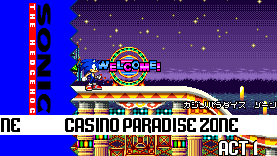
Location: Casino Paradise Zone Act 1
Difficulty: Moderate


Location: Casino Paradise Zone Act 1
Difficulty: Moderate
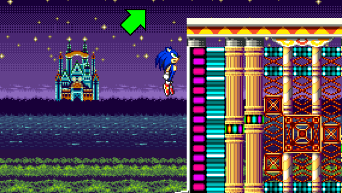
STEP 1:
First, you need to take the higher path of the act. Either by jumping on high platforms at the beginning or by taking the first pole to launch yourself upwards.
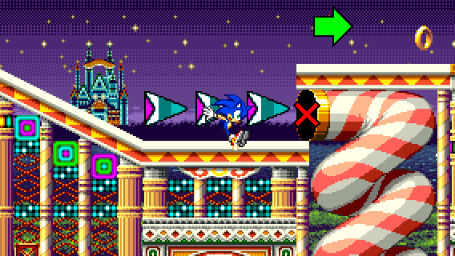
When taking the high path, don't take the spiral tube slide! Otherwise, you won't be able to go back up!
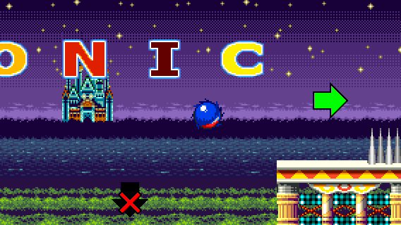
STEP 2:
Try to jump your way on the S O N I C letters and go down at the end of the higher path.
You can also perform a Spin Dash to jump on the other side.
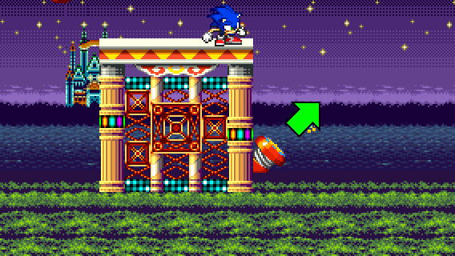
STEP 3:
After falling off at the end of the high path, you will see a diagonal spring below.
Jump on the spring to go up. Make sure to time your jump, as the bumpers may prevent you from going up.
If you play as Tails, you can just fly to the next step.
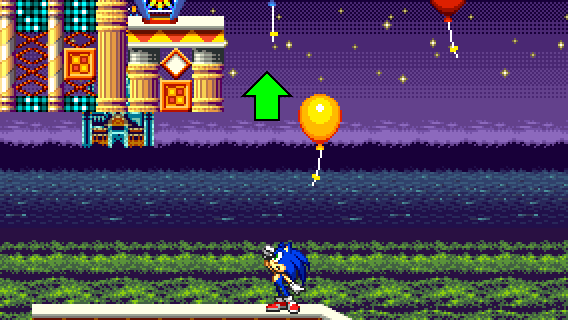
STEP 4:
Then, look above and you will see floating balloons and an Invincibility item box.
Jump on the ballons to go up and take the yellow spring to the left.
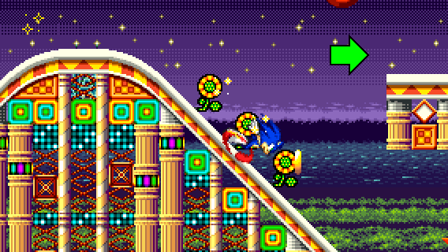
STEP 5:
Finally, you need to jump on the platform where the Special Spring is located right after a long uphill.
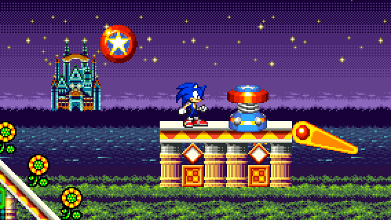
And voila! You found the Special Spring location!
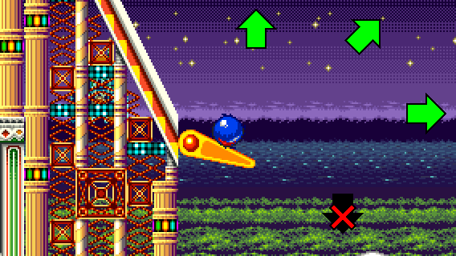
RECOVERY 1:
If you fell off during STEP 2, you can land on a flipper. Launch yourself from it either to go back from where you came, or to land on a small moving platform between 2 bumpers. Be careful not to fall off when trying to land on the flipper!
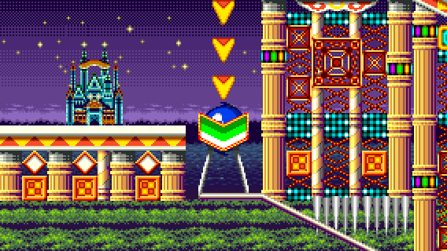
If you take the small moving platform between the bumpers and jump to the right or fell off after STEP 2, you can take the pinball slide to continue.
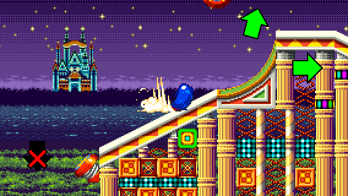
RECOVERY 2:
If you fell off during RECOVERY 1 and you don't want to take the flipper, you can still reach the pinball slide by taking momentum from a Spin Dash to the right.
You can also take the path below the pinball slide to move on.
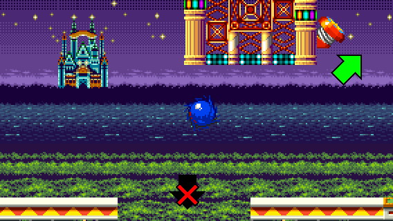
If you decide to take the path below the pinball slide, you will eventually find the diagonal spring above you. Be careful not to fall!
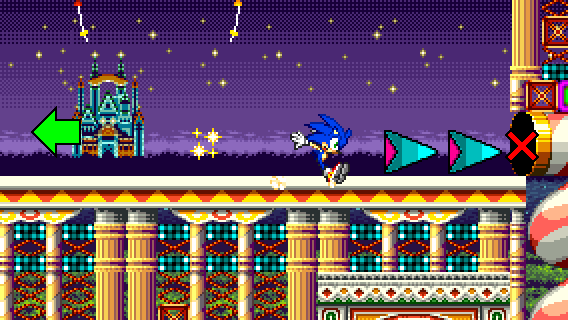
RECOVERY 3:
If you bypass the Special Spring location too fast, due to the poles, don't take the spiral tube slide! Otherwise, you won't be able to go back!
Instead, go back to the left and jump on the platform where the Special Spring is located.